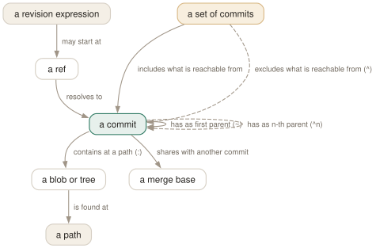

Day 07
The revision language
Naming any commit, file or set of commits without ever copying a hash.
By the end of today you can
- walk from any name to any ancestor with
~and^, including into the second parent of a merge - say in one sentence what
A..BandA...Bselect, and whygit diffreads them differently - check what any expression means with
git rev-parsebefore handing it to a command that changes something
Every argument that names a commit is an expression
Wherever a git command takes commit, tree-ish or rev, it accepts a small language, documented once in gitrevisions(7) and used by every command. Learn it and you stop copying hashes out of git log: you say HEAD~3, @{u}, main...feature or v2.1:src/app.c and git does the walking.
An expression starts from a name and applies suffixes. The name is a hash prefix, a ref (main, origin/main, v1.4), HEAD, or one of the special files like ORIG_HEAD and FETCH_HEAD. @ alone is short for HEAD. Each suffix follows one arrow from Day 1's object model: to a parent, into a tree, back through the reflog.

~, ^n and :path each follow one aspect from a commit; a range is not a commit at all but a set of commits, which is why only commands that walk history accept one.Walking back: tilde follows, caret chooses
Build a small history with one merge so there is something to walk. M merged feature (F1, F2) into main after C:
$ git log --oneline --graph
* cae481f D
* 619e39e M
|\
| * cca7ee6 F2
| * 1956a5b F1
* | e6927c6 C
|/
* d287932 B
* 5aad59a A
HEAD~,HEAD~1,HEAD^- The first parent:
M. On a commit with one parent, tilde and caret agree. HEAD~2- Two generations along first parents:
C. Tilde never leaves the mainline. HEAD~1^2- The second parent of
M:F2, the tip of the merged branch. Caret picks which parent. HEAD~1^2~1- Into the merged branch, then one back along it:
F1.
Read left to right, one step at a time. HEAD^^2 is the same as HEAD~1^2; HEAD~3 is B, reached through C and never through F1.
$ git log -1 --format=%s HEAD^2
fatal: ambiguous argument 'HEAD^2': unknown revision or path not in the working tree.
D has one parent, so it has no second one. Note the wording of the error: git could not parse the word as a revision, so it tried it as a file name and failed at that too. That message is what you get for every typo in this language.
Names for other places
@{-1}- The branch you were on before this one.
git switch -is shorthand for it;@{-2}goes further back. @{u},main@{upstream}- The remote-tracking branch this branch is set to build on (Day 5). Fails with “no upstream configured” if there is none.
@{push}is wheregit pushwould go, which differs only in triangular setups. :/fix race- The youngest commit, reachable from any ref, whose message matches the regex.
HEAD^{/fix race}restricts the search to history behindHEAD. v1.4:src/main.c- The blob at that path in that commit's tree. A path starting
./is relative to where you stand. :src/main.c- The version of the file in the index (stage 0). During a conflict,
:1:,:2:,:3:are base, ours and theirs (Day 4). HEAD@{1},main@{yesterday}- Where a ref pointed before, from your local reflog. Day 11 is about nothing else.
When a name is ambiguous, git takes the first of: a file in .git/, refs/<name>, refs/tags/<name>, refs/heads/<name>, refs/remotes/<name>, refs/remotes/<name>/HEAD. Tags beat branches:
$ git tag main HEAD~3
$ git log -1 --format=%s main
warning: refname 'main' is ambiguous.
B
$ git log -1 --format=%s heads/main
D
Ranges are sets, not segments
Commands that walk history (log, rev-list, shortlog, range-diff) take a set of commits. One name means “this commit and everything reachable from it”. A ^ in front excludes everything reachable from that name. The dotted forms are shorthand:
expression means answers
A..B ^A B what does B have that A lacks?
A...B A B --not $(merge-base A B) what does each side have that the other lacks?
@{u}.. ^@{u} HEAD what have I not pushed?
..@{u} ^HEAD @{u} what have I not pulled? (after a fetch)
X^! X ^X^@ just X, none of its parents
X^- ^X^1 X everything merge X brought in, plus X
X^@ X^1 X^2 ... all parents of X, and their history
With a branch other that forked from feature and gained G, --left-right marks which side each commit of a symmetric difference came from:
$ git log --format='%m %s' --left-right main...other
< D
> G
< M
< C
$ git log --format=%s HEAD~1^- | xargs
M F2 F1
Writing two ranges side by side does not give you two ranges. git log A..B C..D is one set: reachable from B or D, and from neither A nor C. Only a few commands, like range-diff (Day 10), take two ranges on purpose.
Today's habit
Stop copying hashes. For the next week, every time you reach for the mouse to copy a hash out of git log, write the expression instead — HEAD~2, @{u}, ':/typo' — and run it through git log -1 to check it.
That is the end of the essentials. From tomorrow you use this language to move branches around on purpose: reset, restore and revert.
New vocabulary
Commands
| Command | Does |
|---|---|
git rev-parse --verify <rev> | Resolve an expression to one object name, or fail. The checker for everything today. |
git rev-parse --abbrev-ref <rev> | Print the short ref name an expression means: @{u} becomes origin/main. |
git rev-parse --symbolic-full-name <rev> | Print the full ref name, e.g. refs/remotes/origin/main. |
git log A..B | List commits reachable from B but not from A: what B has that A lacks. |
git log --left-right A...B | List commits on either side but not both, marked < or >. |
git diff A...B | Diff from the merge base of A and B to B: what B changed since they split. |
git show <rev>:<path> | Print a file as it was in any commit, without checking anything out. |
git show :<path> | Print the version of a file currently staged in the index. |
Drillsdo these in a real terminal, today
Self-check
Answer out loud first, then unfold.
On a merge commit, HEAD~2 and HEAD^2 name different commits. Which is which, and when does it matter?
~2 is two generations back along first parents: the parent's parent. ^2 is the second parent of this commit — on a merge, the tip of the branch that was merged in. On a non-merge commit ^2 does not exist and git refuses.
It matters whenever you walk history through merges. Following ~ keeps you on the mainline (what main looked like at each step); ^2 steps sideways into the feature. HEAD~1^2~1 reads left to right: one back on the mainline, into that merge's second parent, one back along the feature.
You run git log main..feature and get nothing, although feature definitely has commits. What happened?
Two dots mean “reachable from feature, minus everything reachable from main”. If feature has already been merged into main, every one of its commits is reachable from main too, so the set is empty. The range does not describe a branch's history; it describes a difference between two sets of commits. Empty output means “nothing left to merge”, which is often exactly the question you wanted answered.
A reviewer asks for “the diff of your branch”. git diff main..feature shows your changes plus a pile of reversed changes from other people. Why, and what should you have typed?
git diff does not take ranges of commits; it compares two endpoints. For diff, main..feature is main feature: the tree of main today against the tree of feature. Everything merged into main since you branched shows up reversed, as if you had deleted it.
git diff main...feature compares the merge base with feature: only what your branch changed. It is the diff a pull request shows. The dots mean one thing to log and another to diff, and the man pages say so in different places.
You tag a release main by mistake. Now git log main shows old history and prints a warning. What rule is at work?
gitrevisions(7) resolves a bare name by trying, in order: a file in .git/ (like HEAD), then refs/<name>, then refs/tags/<name>, then refs/heads/<name>, then remotes. Tags come before branches, so the tag wins and git warns “refname 'main' is ambiguous”. Spell the branch out as heads/main until you delete the tag with git tag -d main.
Cheat sheet
HEAD~3 # three back along first parents @ = HEAD
M^2 # second parent of merge M (the merged tip)
@{-1} # previous branch (git switch -)
@{u} # this branch's upstream, e.g. origin/main
:/regex # youngest commit whose message matches
REV:path # a file as of REV :path = staged version
A..B # in B, not in A (@{u}.. = unpushed)
A...B # in either, not both (log --left-right)
diff A...B # merge-base(A,B) -> B: what B's side changed
X^! X^- # just X / everything merge X brought in
git rev-parse --verify --abbrev-ref EXPR # check before acting
Everything through Day 07
Commands
| Command | Does |
|---|---|
git init -b main | Create an empty repository whose first branch is main. |
git hash-object <file> | Print the object name the file's contents would get. Writes nothing without -w. |
git cat-file -t <object> | Print an object's type: blob, tree, commit or tag. |
git cat-file -p <object> | Pretty-print an object's contents. The one command that shows what git really stores. |
git cat-file -s <object> | Print an object's size in bytes. |
git ls-tree -r <tree-ish> | List every blob in a tree, recursively, with mode and hash. |
git rev-parse HEAD | Turn a name into the full hash it currently means. |
git count-objects -v | Count loose and packed objects and the disk they use. |
git status -s | Show each changed path with two columns: index vs HEAD, then working tree vs index. |
git add <path> | Copy the file's current contents into the index. Writes the blob immediately. |
git add -p | Walk through each hunk and choose which ones go into the index. |
git diff | Show what differs between the index and the working tree — what add would stage. |
git diff --staged | Show what differs between HEAD and the index — what commit would record. |
git restore <path> | Overwrite the working-tree file with the index version. Discards unstaged edits. |
git restore --staged <path> | Reset the index entry to HEAD's version. The working tree is untouched. |
git commit [-a] | Turn the index into a tree, wrap it in a commit, move the branch to it. -a first stages every modified tracked file (never untracked ones). |
git rm --cached <path> | Remove a path from the index only; the file stays on disk, now untracked. |
git branch | List local branches; * marks the one HEAD names. |
git branch -v | List branches with the commit each points at and its subject line. |
git branch <name> | Create a branch at HEAD without switching to it. |
git switch <branch> | Point HEAD at a branch and update the index and working tree to its commit. |
git switch -c <name> | Create a branch at HEAD and switch to it in one step. |
git switch - | Switch back to the branch you were on before. |
git switch --detach <commit> | Point HEAD directly at a commit, with no branch in between. |
git branch -d <name> | Delete a branch, refusing unless it is merged into its upstream (or into HEAD, if it has none). |
git branch -D <name> | Delete a branch unconditionally. |
git branch -m <old> <new> | Rename a branch. |
git merge <branch> | Bring the branch's history into the current one: fast-forward if possible, else a merge commit. |
git merge --ff-only <branch> | Merge only if it is a fast-forward; otherwise refuse and change nothing. |
git merge --no-ff <branch> | Always create a merge commit, even when a fast-forward was possible. |
git merge --abort | Give up a conflicted merge and restore the state before it started. |
git merge-base A B | Print the best common ancestor of two commits — the version a merge compares against. |
git ls-files -u | List the unmerged index entries: one line per stage per conflicted path. |
git show :1:<path> | Show the base version of a conflicted file. :2: is yours, :3: theirs. |
git checkout --conflict=merge <path> | Recreate the conflict markers in a file you mangled; =zdiff3 works too. |
git clone <url> | Copy a repository: all objects, its branches as origin/*, and one local branch checked out. |
git remote -v | List remotes with their fetch and push URLs. |
git remote add <name> <url> | Register another repository under a short name. |
git fetch | Download new objects and move the remote-tracking refs. Never touches your branches or files. |
git pull | Fetch, then integrate the upstream into the current branch. |
git push | Send the current branch's commits and move the branch of the same name on the remote. |
git push -u origin <branch> | Push and record origin/<branch> as this branch's upstream. |
git push origin --delete <branch> | Delete a branch on the remote. |
git branch -vv | List branches with their upstream and ahead/behind counts. |
git log --oneline --graph --all | Draw every branch's history, one line per commit. |
git log -p | Show each commit's diff against its parent. |
git log --stat | Show which files each commit touched, and how much. |
git log --author=<re> --since=<date> | Keep only commits whose author matches, from a date onwards. |
git log -- <path> | Keep only commits that changed the path. The -- separates paths from revisions. |
git log --follow -- <file> | Follow one file's history back through renames. |
git log -S<string> | Pickaxe: keep commits that change how many times the string occurs. |
git log -G<regex> | Keep commits whose diff adds or removes a line matching the regex. |
git log -L :<func>:<file> | Show the history of one function (or -L 10,20:file for a line range). |
git show <commit> | Show one commit: message and diff. |
git blame -w -C <file> | Annotate each line with its last commit, ignoring whitespace and seeing moves between files. |
git rev-parse --verify <rev> | Resolve an expression to one object name, or fail. The checker for everything today. |
git rev-parse --abbrev-ref <rev> | Print the short ref name an expression means: @{u} becomes origin/main. |
git rev-parse --symbolic-full-name <rev> | Print the full ref name, e.g. refs/remotes/origin/main. |
git log A..B | List commits reachable from B but not from A: what B has that A lacks. |
git log --left-right A...B | List commits on either side but not both, marked < or >. |
git diff A...B | Diff from the merge base of A and B to B: what B changed since they split. |
git show <rev>:<path> | Print a file as it was in any commit, without checking anything out. |
git show :<path> | Print the version of a file currently staged in the index. |
Options
| Option | Does |
|---|---|
user.name / user.email | Set the identity written into every commit's author and committer lines. |
init.defaultBranch | Name the first branch of every new repository. |
commit.verbose | Show the staged diff below the message in the commit editor. |
branch.sort | Set the default order of git branch; -committerdate puts recent work first. |
merge.conflictStyle | Choose the marker style: merge (default), diff3 or zdiff3. |
pull.ff | only: let git pull fast-forward and refuse anything else. |
push.autoSetupRemote | Make a plain git push of a new branch create it upstream and track it. |
fetch.prune | Delete remote-tracking refs whose branch was deleted on the remote, on every fetch. |
diff.colorMoved / diff.colorMovedWS | Colour moved blocks differently from added and removed ones; allow-indentation-change still recognises a re-indented move. |